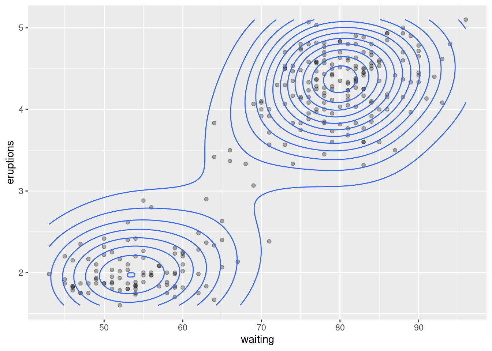
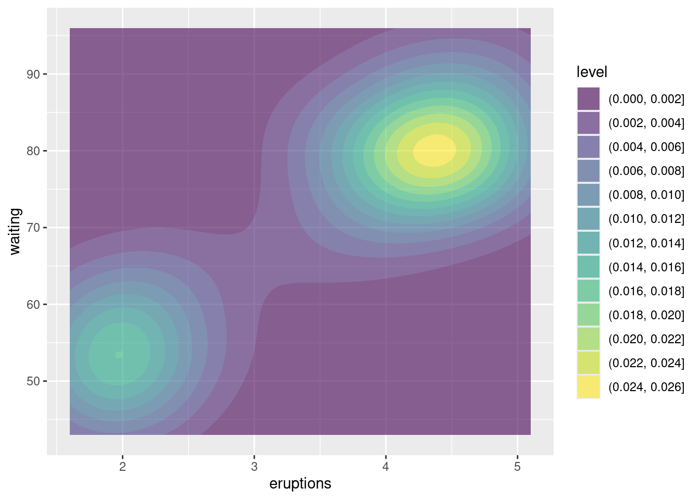

if (!require('ggplot2')) {
install.packages('ggplot2')
}3 Data Visualization
The most famous package in R that is used for visualizing of data is ggplot2 that is based on the grammar of graphics. It allows you to `speak’ a graph from composable elements, instead of being limited to a predefined set of charts.
Before using ggplot2, a user must first install the package and then load it into their R session. Installation is done only using the command install.packages('ggplot2'). Alternatively, the following code can be used to install if only if the package is not already installed on the computer.
which downloads the package from CRAN (the Comprehensive R Archive Network). After installation, the package needs to be loaded each time R is restarted. This is done with the following command:
A brief overview about using this package is available at this website and more complete information about how to use ggplot2 can be found in Wickham, Navarro, and Pederson (2019).
The structure of the package includes 7 composable parts that come together as a set of instructions on how to draw a chart.

The package ggplot2 requires a minimum of three main components to create a chart: data, mapping, and a layer. Other components – like scales, facets, coordinates, and themes – are optional because ggplot2 gives them automatic settings that usually work well, so you do not need to adjust them too much.
In the following, we briefly describe these components:
3.1 Data
Every plot made with ggplot2 starts with data. This data should be in a tidy format that means the data is in a table (called a rectangular data frame) where:
Each row is one observation.
Each column is one variable.
The first step to create a plot with ggplot2 is to pass this data to the ggplot() function, which stores the data to be used later by other parts of the plot.
For example, if we want to make a plot using the mpg dataset, we begin like this:
You should see an empty plot. It is correct. Can you explain why the plot is empty?
3.2 Mapping
In ggplot2 package, mapping means telling the system how to connect parts of the data to aesthetic properties of the plot.
Aesthetic (say: es-THE-ik) is a word that describes how something looks – its style, color, shape, and beauty. In ggplot2, an aesthetic is a visual feature of a plot like:
- Position (x and y) – controls where data appears on the plot
- Color – changes color based on data values
- Size – adjusts the size of points
- Shape – uses different shapes for different categories
These help us turn numbers into pictures. It is how we ’’dress up†the data so it speaks to our eyes.
Memory tip
Just like fashion has aesthetic styles (like modern, classic, or colorful), plots also have aesthetics – they decide how the data looks!
A mapping can be made by using aes() function to make pairs of graphical attributes and parts of the data. Inside aes(), we match parts of the data (like column names) with visual elements (like \(x\) and \(y\) position).
For the dataset mpg, if we want to show cty (city miles per gallon) on the \(x\)-axis and hwy (highway miles per gallon) on the \(y\)-axis, we write
3.3 Layers
The layer is the heart of any plot in ggplot2. A layer takes the mapped data and turns it into something that a human can see and understand – like points, lines, or bars.
Each layer has three main parts: 1. Geometry – decides how the data is shown (for example: points, lines, bars) 2. Statistical transformation – can create new values from the data (like averages or smooth curves). 3. Position adjustment – controls where each part of the plot appears, especially when things overlap.
A layer can be constructed using functions that start with geom_ (for geometry) and stat_ (for statistics). These function help us choose how the data looks and what to display.
::: callout-note The geom_*() and stat_*() functions usually control one part of the layer – like the geometry or the statistics – but you can still manullay choose the other two parts if you want. :::
The code below shows how to make a scatter plot with a trend line using two layers:
3.4 Scales
A scale translates what we see on the plot into something we can understand from the data – like showing how far, how big, or what category a point represents.
Each scale is connected to an aesthetic – for example, the \(x\)-axis, \(y\)-axis, color, or size – and it controls things like - The limits of the plot (minimum and maximum values) - The breaks (where ticks or labels appear) - The format of the labels (like numbers or percentages) - Any transformation (like logarithmic scale)
Scales also create guides for the reader – like axes or legend – so we can better understand the meaning of the plot.
Scale functions in ggplot2 usually follow the format scale_[aesthetic]_[type](), where {aesthetic} is one of the pairing made in the mapping part of a plot. For example, scale_x_continuous() – for a numeric \(x\)-axis; scale_colour_viridis_d() – for discrete color with the Viridis palette.
Here is how to use a custom color scale for the class variable in the mpg dataset:
This tells ggplot2 to use Viridis colors for the different car classes – making the plot easier to read and more accessible.
3.5 Facets
Facets are used to split a plot into smaller subplots, each showing a subet of the data. This is helpful when you want to compare groups – for example, different years, categories, or types – in separate panels.
Facets are a powerful way to quickly see patterns, trends, or even no patterns in different parts of the data.
Facets have their own mapping, written as a formula.
The following code creates one scatter plot of two variables cty and hwy of the dataset mpg for each combination of year and drv (driver type) in different panels; so, you can compare them side by side.
In facet_grid(year ~ drv), the rows are based on year and the columns are based on drv. As you see, this creates a grid of plots that makes it easy to explore how variables interact.
3.6 Coordinates
The coordinates is the part if the plot that controls how position aesthetics (like \(x\) and \(y\)) are shown. You can think of it as the interpreter that tells the plot where to place things.
Most ggplot2 plots use Cartesian coordinates, where data is shown on regular \(x\)-\(y\) grid. But you can also use other systems, like: Polar cooridinate (for circular plots) and Map projections (for geographic data).
You can also use coordinates to make sure that one unit on the \(x\)-axis is the same size as one unit on the \(y\)-axis. This is called a fixed aspect ratio. The function coord_fixed() does this ratio automatically.
3.7 Theme
The theme controls parts of the plot that are not related to the data, such as background, text, grid, and legend position. It helps define the overall look and feel of the plot.
For instance, you can use the theme to: - Move or hide the legend - Change font size or colors - Set a new background style - Adjust the axes or grid lines
Some them settings are hierarchical, meaning that if you change the general axis style, it also changes both the \(x\)-axis and \(y\)-axis unless you set them separately.
To change the appearance of a plot, you can use the built-in theme_*() functions (like theme_minimal(), theme_classic(), or theme_light()), or you can customize specific details using the theme() function. With element_*() functions (e.g. element_line(), element_text()) let you adjust the visual style of theme parts, such as lines, texts, or backgrounds.
The following code creates a scatter plot and applies a minimal theme. It also moves the legend to the top, makes axis lines thicker, and colors the bottom \(x\)-axis blue.
3.8 Mastering Plot Layers: Guided Examples and Student Activities
As we mentioned before, a ggplot2 is made by layering different parts. You can combine data, mapping, geoms, scales, facets, coordinates, and themes to build a fully customized plot.
Below is an example that brings everything together:
Note
There is no need to type argumants.
3.8.1 Scatter Plot – geom_point()
A scatter plot shows the relationship between two numeric variables. each point on the plot represents one observation.
Tip
Scatter plots are useful for seeing patterns, trends, or outliers in data.
An example for seeing the basic scatter plot is showing how height (in inches) changes with age (in years) for each person in the dataset heightweight.
we can customize the size of points by adding size = 1.5 to the function geom_point().
Now, we can add two aesthetics: shape and color, based on the sex variable.
Now, we are mapping colour or size to a numeric variable (e.g. weightLb)
These plots show how weight varies with age and height using color or size.
Now, we are mapping colour to the variable sex and size to a numeric variable weightLb
Using the heightweight dataset, make a scatter plot to explore the relationship between heightIn and weightLb variables. Your tasks are:
Use points to represent the data.
Show the variable sex using
colorso that we can see the difference between males and females.Make the points larger than usual, with a size of \(2.5\).
Finally, give your plot a title that describes what it shows, The title should be: “Height vs, Weight by Sex”
You will need
aes(x = ______, y = ______, colour = ______)-geom_point(size = ______)ggtitle(______)
Solution.
ggplot(heightweight, aes(x = weightLb, y = heightIn, colour = sex)) +
geom_point(size = 2.5) +
ggtitle("Height vs. Weight by Sex")3.8.2 Line Plot – geom_line()
Use when: You want to show how a variable changes over time or another ordered variable (like day, year, index)
What is shows: Trends, increases or decreases, cycles over time
Example
This plot shows how unemployment has changed over time.
3.8.3 Barplot – geom_bar() and geom_col()
Use when: You want to compare counts or values between categories.
geom_bar()counts how many times each category appears.geom_col()shows values you provided directly.
What it shows: Frequencies or values across different categories.
Example
3.8.4 Histogram – geom_histogram()
Use when : You want to see the distribution of a numeric variable.
What is shows : How values are spread across intervals (called “bins”).
Example
This plot shows many cars fall into different highway mpg ranges.
3.8.5 Boxplot – geom_boxplot()
Use when: You want to compare summary statistics (like median, quartiles, ouliers) across different groups.
What it shows : Median, spread, and outliers for each group.
Example
This plot compare highway mpg for different type of vehicles.
3.8.6 Violin Plot – geom_violin()
Use when: You want to see the distribution shape plus summary info for groups.
What it shows: Like a boxplot, but with a mirrored density curve – great for showing the full distribution and comparison across groups.
Example
You can also add add points or boxplots inside the violins:
3.8.7 Dot plot – geom_dotplot()
Use when: You want to show individual values, especially for small datasets.
Example
3.8.8 Density Plot – geom_density()
Use when: You want a smoothed version of a histogram.
What is shows: Estimate of the data’s distribution, good for seeing shapes or peaks.
Example
We can combine the histogram and density plot to show exact counts (histogram) and smooth distribution (density) in one plot.
Example
What is
after_stat(density)?
In ggplot2, when you use geom_histogram(), the default \(y\)-axis is count (how many observations fall in each bin). But if you write aes(y = after_stat(density)), you are asking ggplot2 to scale the height of the bars so they represent probability density instead of raw counts. This allows you to compare this histogram with a density curve (like the one from geom_density()), which also shows density.
This shows both frequency and smoothed distribution of highway mpg.
3.8.9 Pie Chart (using Polar Coordinates)
Use when: You want to show parts of a whole, but use with caution – bar plots are often easier to read.
Example
3.8.10 2D Density Plot
A 2D density plot is used to show the distribution of two numeric variables. Instead of plotting each point (like in a scatter plot), it shows where points are concentrated using contour lines (geom_density_2d()) and filled contour areas (geom_density_2d_filled()).
Use when: you have many overlapping points (overlapping) in a scatter plot and you want to highlight patterns or clusters in two numeric variables and see a smoother version of the joint distribution.
Example
Adding points makes it easier to see what the contours represent.
ggplot(faithful, aes(x = waiting, y = eruptions)) +
# Add Data Points for Context
geom_point(alpha = 0.3) +
geom_density_2d()
The following code results in a plot that shows filled bands of density that it is great for visual impact.
ggplot(faithful, aes(x = eruptions, y = waiting)) +
geom_density_2d_filled(alpha = 0.6) 
Combining points and filled contours gives both precision and overview.
ggplot(faithful, aes(x = eruptions, y = waiting)) +
geom_point(alpha = 0.3) +
geom_density_2d_filled(alpha = 0.5) +
theme_minimal()You can map density levels to color using after_stat(level)
You can also different code to produce the plot.
3.8.11 2D Binned Plot for Big Data – stat_bin2d()
Use when: You have a lot of points and scatter plots are too dense.
Example
3.8.12 Frequency Polygon – geom_freqpoly()
A frequency plot is similar to a histogram, but it uses lines instead of bars to show how a variable is distributed. It is especially useful when you want to compare distributions across groups.
Use when: You want to show the shape of a distribution and also compare multiple groups using lines (which may be easier to read than overlapping histograms).
Examples
3.8.13 Correlation Plot (Cor plot)
A correlation plot (or cor plot) is a visual way to show how strongly variables are related to each other. Correlation values range from \(-1\) to \(1\), and the plot helps you quickly see positive, negative, or no relationships.
This is not built into ggplot2, but we can use it together with
The
cor()function to compute correlationThe
corrplotorggcorrplotpackage to visualize it.
Example using ggcorrplot
Example using corrplot
Wickham, Hadley, Danielle Navarro, and Thomas Lin Pederson. 2019. Ggplot2: Elegant Graphics for Data Analysis. 3rd ed. https://ggplot2-book.org/.